01 · 集合
前往智元
10:00 准时开始交流会
智元创新（上海）科技股份有限公司 B 区
上海市浦东新区康桥路环桥路 1001 号
- 自驾
- 有车的伙伴自行前往。
- 拼车
- 无车且离创新港较近的伙伴，在创新港集合后一同打车；途中可顺路接人。
- 时间
- 创新港到智元预计至少 1.5 小时，请留足时间。
- 可选
- 有 L2 驾照的伙伴可考虑租一辆 ES9 使用一天。
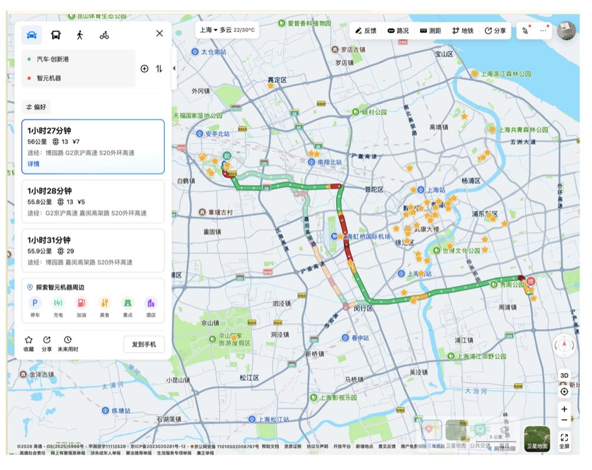
我的备注支持跨设备保存
TEAM EXCHANGE DAY · 10.10 周六
上午与智元、萤火虫团队交流，中午一起吃饭，下午逛美术馆。
10:00 准时开始交流会
上海市浦东新区康桥路环桥路 1001 号

选好目的地，再查看附近的午餐方案。
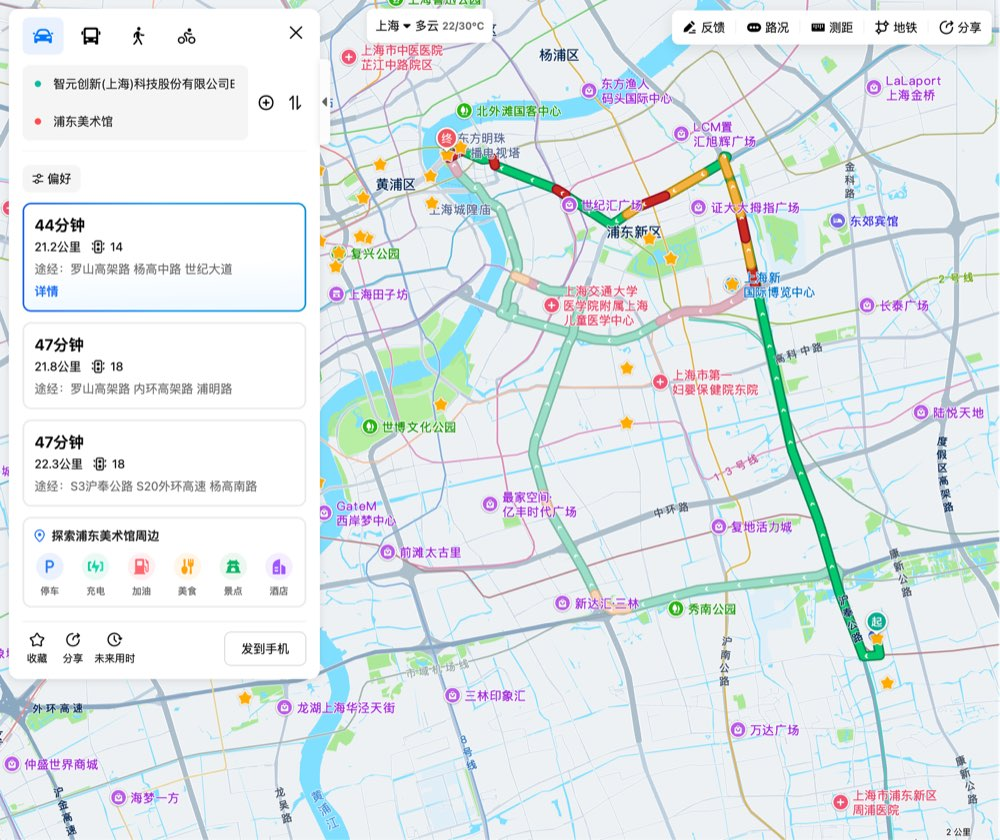
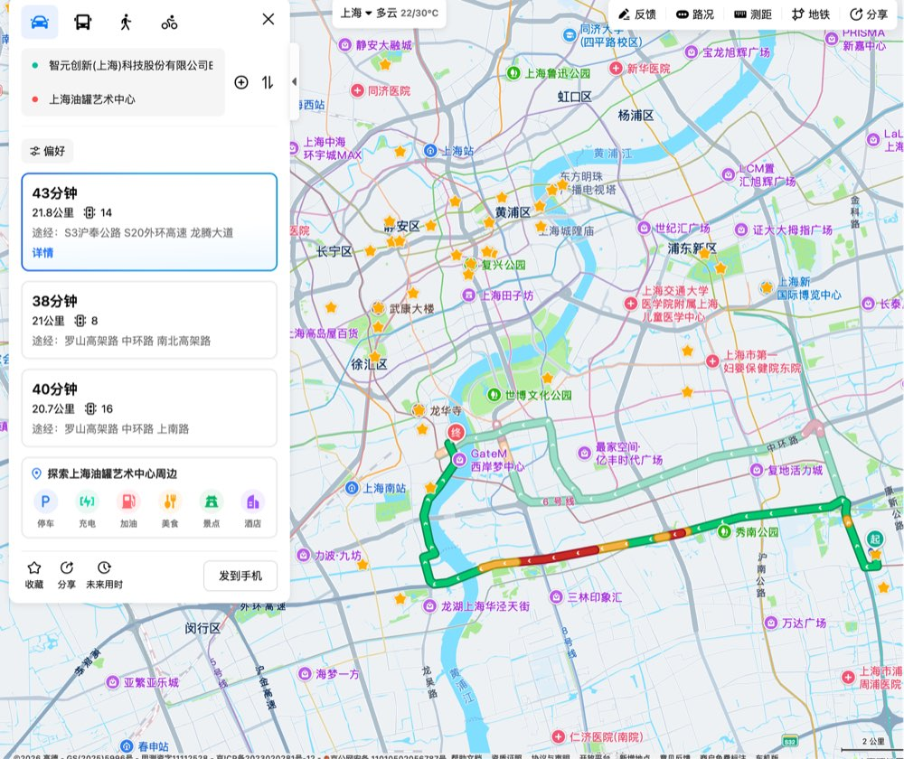
13:30–15:00 · 人均预算 ¥300
12:00–12:30 从智元出发；餐厅均可从对应美术馆步行抵达。
预计车程 45 分钟
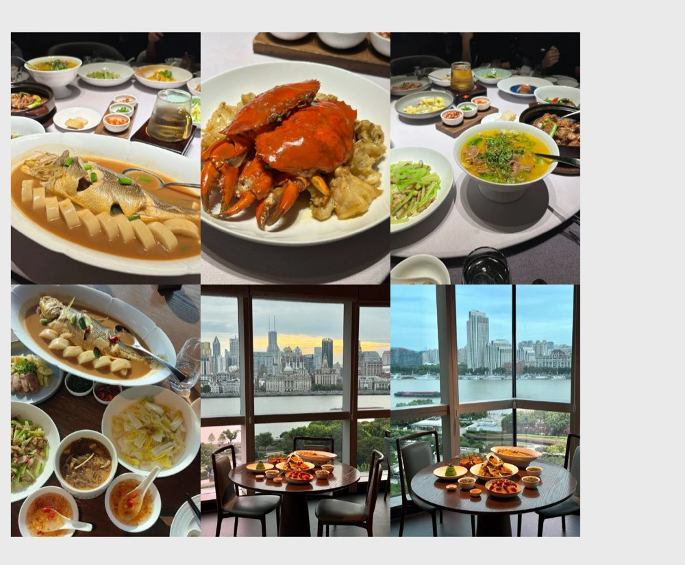
需提前预定
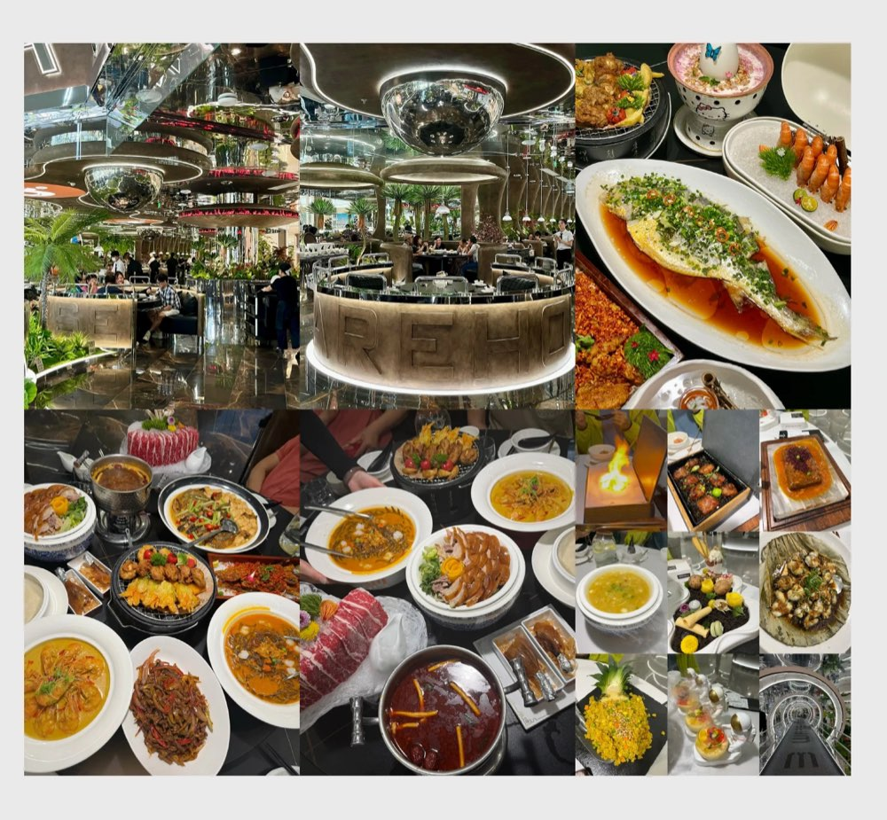
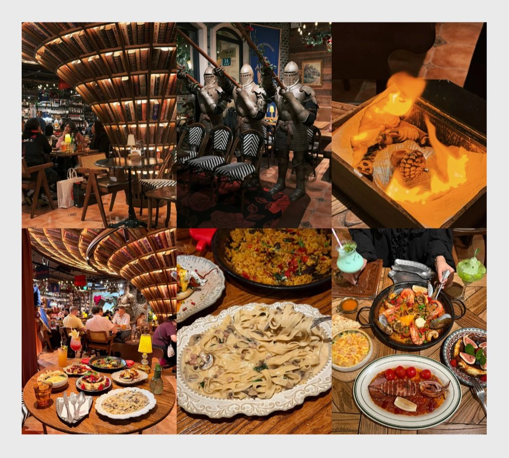
预计车程 45 分钟
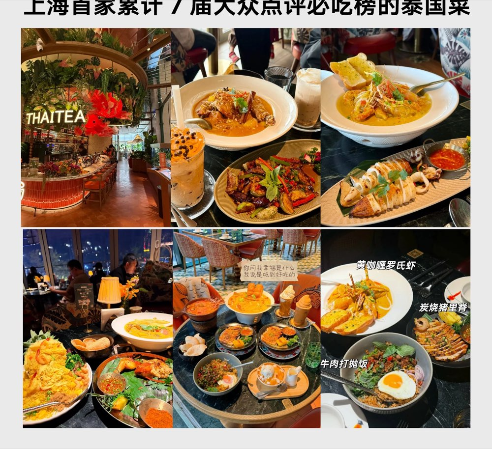
累计 7 届大众点评必吃榜
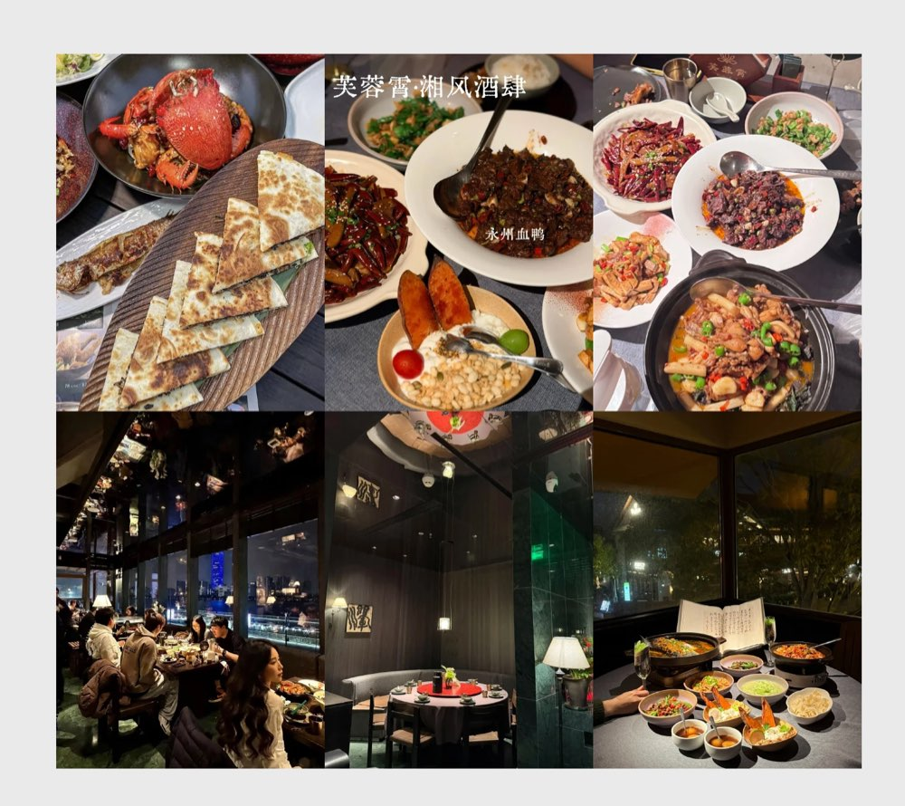
Gate M 西岸梦中心
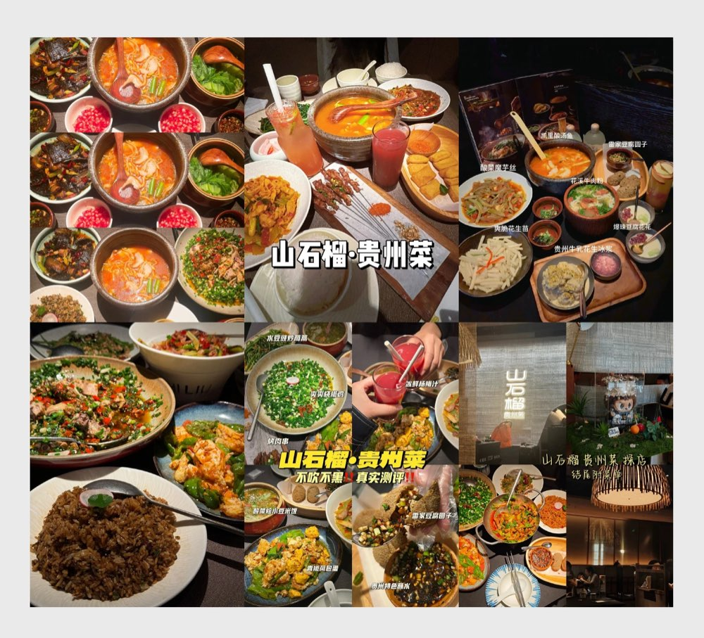
Gate M 西岸梦中心
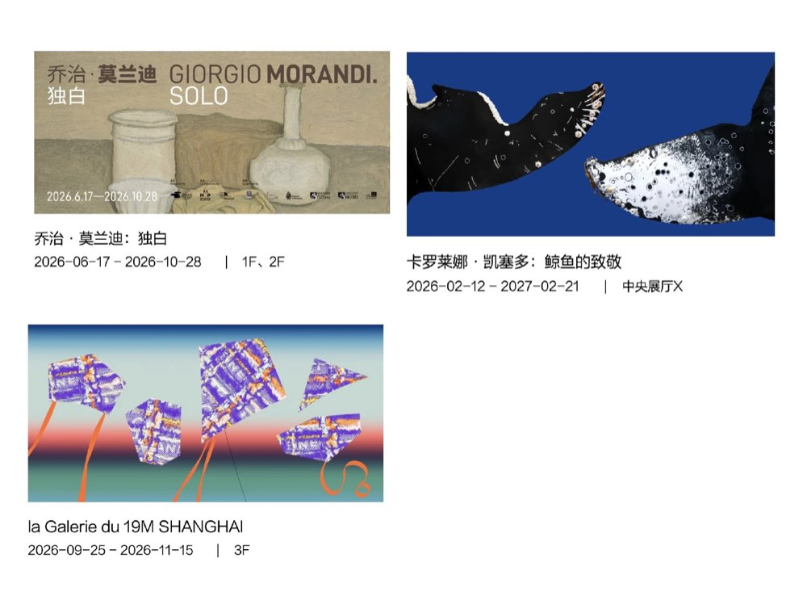
本世纪全球最大莫兰迪回顾展，约 120 件作品，逾 120 件首次来华。
呈现香奈儿旗下 11 家高级手工坊的精湛工艺，及中法当代艺术家群展。
浦美 34 米中央展厅，两条真实尺寸座头鲸悬浮装置，营造沉浸式海洋空间。
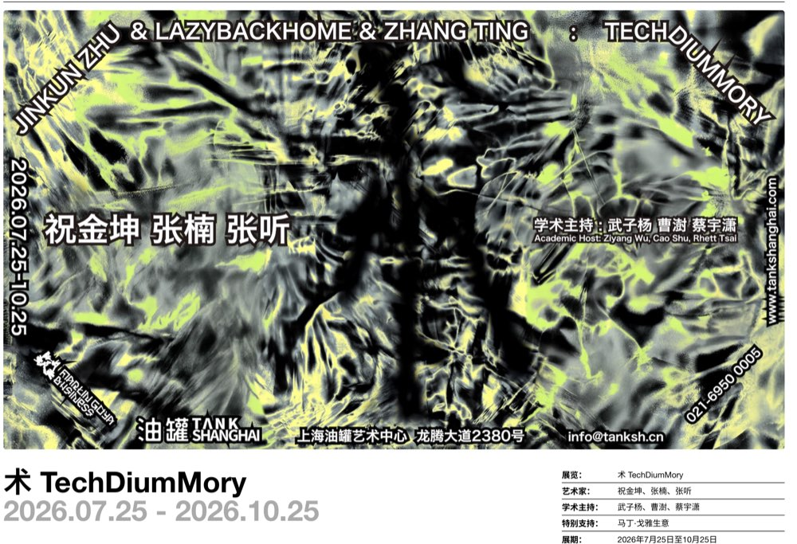
展览聚焦技术（Tech）、媒介（Medium）与记忆（Memory）如何共同塑造现实。三位艺术家通过图像、算法、数据与日常物件，讨论信息传播、社会记忆和个体经验如何在持续复制中被重组。
方案和餐厅都欢迎继续补充，有更好的想法直接发到群里。